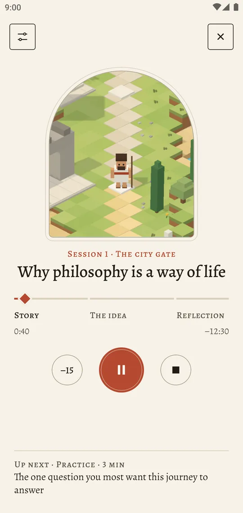
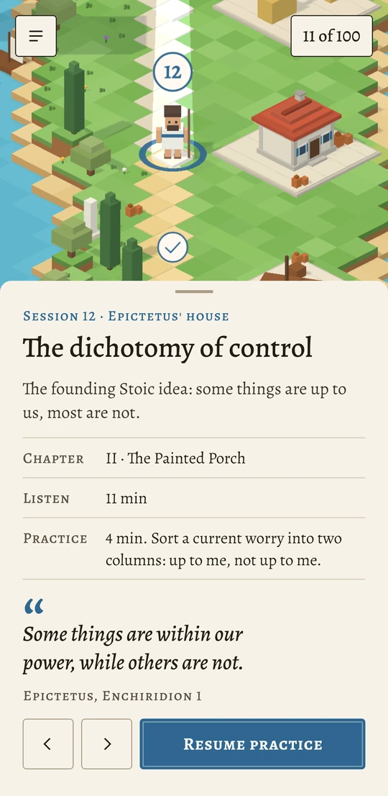
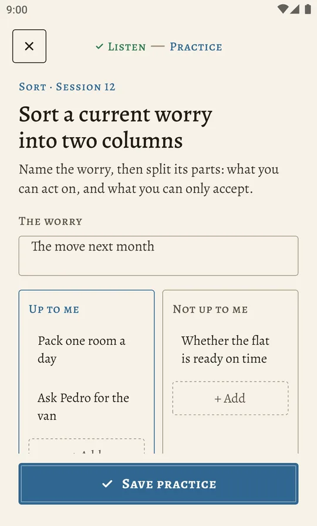
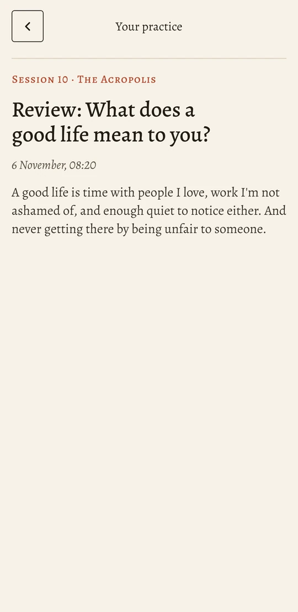
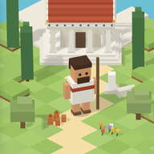

Every session
Three parts, about ten minutes



There's a joke hidden in this picture, and once you've seen it, you can't quite stop seeing it. The joke is that you already have a philosophy. You've had one for years. Everybody has. You just can't hear it.
Your journal
Your own words, kept on your phone
In session 10 you write your first definition of a good life. At the summit, you come back to it and see what changed. Everything you write stays on your device.

Simple, and yours to keep
- Five sessions free. Walk the first stretch of the road before you decide.
- One payment, no subscription. The rest of the road unlocks for good.
- No account, no ads. Nothing to sign up for, nothing tracking you.
- Works offline. Listen on a walk, on a train, anywhere.
